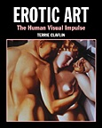

{kind=link}
{kind=link}
{kind=link}
{kind=link}
{kind=link}
{kind=link}
{kind=link}
{kind=link}
{kind=link}
{kind=link}
{kind=link}
{kind=link}
{kind=link}
{kind=link}
{kind=link}
{kind=link}
{kind=link}
{kind=link}
{kind=link}
Interview with Landeros & Wheeler
By Randy Sluganski and Tom Houston
You are both responsible for creating The 7th Guest and The 11th Hour, two of the most well-known adventure/puzzle games in the industry. At one time there were rumors of movie versions of these games--is this still a possibility?
Rob: Yes, a production and marketing company called Threshold Entertainment optioned the movie rights. They were the ones that brought Mortal Kombat to the big screen. I suppose 7th Guest might show up in the theaters some day way out in the future, when somebody looks back nostalgically at some classic titles from the good ol' days of PC gaming. Right now, I sense a lack of momentum for licensing that title. But I think there is always room for a good old-fashioned horror ghost story. Witness the success of The Sixth Sense and The Blair Witch Project. Too bad The Haunting remake was such a letdown.
David: Actually, I had nothing to do with The 7th Guest. It was almost finished when I met Rob and started working on The 11th Hour. I always thought that it would be ironic for 7th Guest to be made into a movie (but a good idea, nonetheless). It was based on or, at least, inspired by, Hollywood horror movie classics. It would be typical of Hollywood to make a movie based on a computer game which was based on a movie in the first place. It reminds me of A Fistful of Dollars, the first Spaghetti Western: A movie about the American west made by Italians, based on Yojimbo, a Japanese Samurai movie, which was inspired by American westerns.
If TLC was to be the first interactive, full-length motion picture designed for CD-ROM, what marketing factors, if any, drove or inspired the decision to make this groundbreaking type of interactive experience?
Rob: With all the titles I produce or design, I have done so with the intent of making them appealing for a mass market audience and certainly not targeted for the hardcore game enthusiast niche. I also decided to do TLC simply because I thought it needed to be done. I needed to test out the concept by first of all doing it, and then putting it out in the marketplace. If we had considered marketing factors in the traditional sense, TLC would never have been made. This was totally driven from my need to follow a line of creative thinking along its course--a line that began when I first art-directed the Cinemaware line of products, and continued to flow through 7th Guest and 11th Hour. My interest being interactive storytelling with emphasis on story and the cinematic form, which combined with music, is arguably the most powerful form of media for pure emotional impact.
David: Originally, TLC was designed to be a regular movie. I wrote a screenplay based on Andrew Neiderman's novel and made a deal to make the film. But the distribution partners--one foreign, one domestic--began fighting over casting and the deal fell apart. On 11th Hour, I was inspired by the interactive possibilities I discovered while working with Rob and started thinking about TLC in interactive terms when the film stalled. I was trying to fit it into a 7th Guest/11th Hour kind of structure when Rob suggested we think outside of the box and it started to evolve as something else--an actual computer-based movie that was truly interactive. The development was entirely organic and had nothing to do with marketing factors. Most of our co-workers were baffled by it, and TLC also managed to confuse much of the publishing and marketing community. People who try it, however, have no trouble at all "getting" it and our fans are astonishing with their enthusiastic support.

Rob: All those motivations could hold true. I suppose it depends on the viewer. But that is the essence of TLC anyway. The story and characters are open to interpretation. Through the supplemental material, we tried to inject even more ambiguity into the situation. TLC is made to utilize the results of individual viewer perception to influence itself. It sort of embodies the notion that nothing can be objectively observed because of the influence of the observer upon the observed.
David: There is a vagueness about the characters in TLC which we both found very compelling. This allowed us to create a structure within which the characters could feasibly behave in quite conflicting ways. This gave birth to the core of our interactive design in which variation is found within the behavior of the characters, rather than in the plot. This meant we could stick closely to the original story, avoid the pitfalls of branching story lines, yet offer up a considerable degree of variation through the viewer's interactive output.
There are supposedly seven different endings to TLC (though I personally have only viewed five of them). Is there a key point or decision in the gameplay that triggers the different endings? If one has already completed the game, what can he/she do to see the different endings short of replaying the entire game?
Rob: There are indeed seven endings. But four are "main" endings with the rest being variations. Five involve the death of one of the characters. Of those, three are by murder, two by accident. One ending has a character ending up as a vegetable. One has the murder of another character.
There is no one key point or decision that affects the outcome. The controlling logic is highly complex and somewhat fuzzy. It is complex enough to be rather unpredictable itself. In that way it is organic. As with chaos, there is structured randomness. So there is no walkthrough for this game. With the DVD Video version, there are codes available which you can use to get different versions.
[Note: This paragraph contains TLC spoilers.] As a gift to you and your readers, here is one end code. When this code is used you can play the entire movie through uninterrupted. Or you can go back interactively to each interactive episode and experience it episodically, exploring the supplemental material in the house. It consists of the PG-rated version (no nudity and the ending is the one in which Allison gets into a tug-of-war with Kathryn over the doll. Kathryn accidentally tumbles down the stairs, apparently to her death. Michael calls 9-1-1. Later, we see Michael and a fully restored and sensuous Allison in bed when the voice of a child calls out to Michael.
Code Set # |
1 |
2 |
3 |
4 |
5 |
6 |
7 |
8 |
9 |
Double Digit Code |
00 |
0F |
86 |
0F |
00 |
00 |
00 |
00 |
A4 |
Where did the idea of using the development of one's personality profile to influence the plot, change the action, guide the story and affect the conclusion originate from?
Rob: It came about as a result of my decision not to include any traditional gameplay elements. At that point we had to find other hooks on which to hang the interactivity. The psychological basis of the story lent itself to the idea of psychological testing. This in turn led to the idea of personality profiling and also the direct polling of the viewer's conscious attitudes and reactions to the story and its characters.
David: Way back, when I was thinking in 7/11 terms, I had thought that we would create puzzles that would be psychologically based--like rat mazes and ink blot tests. With Rob's radical thought of abandoning puzzles altogether, I let go of these ideas but they resurfaced in a new form as an integral part of the interactivity and the TATs (Thematic Aperception Tests) do provide a form of gameplay in this non-game experience.
Have you been able to develop or confirm a profile of the type of audience that has purchased TLC?
Rob: We have done no gathering of consumer data. At one time we thought of offering further material via our website which one could get to only by submitting to more psychological examination. But that didn't happen. We do get a ton of fan mail, though. There is a wide demographic range of people who buy and enjoy TLC. But they seem to be a slightly older audience than most PC games and there is quite a larger representation of women and couples. One of our goals is to expand the audience for interactive entertainment in exactly these directions, so we regard these data points as being very positive.
David: We seem to be on the threshold of finding a new audience but I've been surprised by the response from traditional gameplayers--the adventure game community has begun to embrace TLC and even the more hardcore gamers are coming on board. At first, we were completely misunderstood by some of the gaming magazines when we screened the linear version of the story (two years before we finished the product) but the reviews of the finished product have been stellar. Our decision to create a fully interactive DVD Video version really opened some new doors. That version is beating out most of the major film studio releases for the significant DVD awards. We just hope the public catches on. It's difficult to compete with the marketing behind a DVD release of Titanic.
Should we expect to see another interactive movie on CD-ROM in the near future?
Rob: Right now we are talking to parties that could make that a possibility, but that would not be in the very near future. Any opportunity we can get to go a step further in this direction is a welcomed and exciting one for us. Much of our mail asks if and when we will be forthcoming with another such title. We can only say we are trying. Publishing companies with the necessary capital and distribution channels are extremely conservative and risk-averse. It is a minor miracle that TLC was created and delivered to the world in the first place.
David: I tend to be the recklessly optimistic one in the partnership, but I predict we'll have our next TLC-like product in the marketplace within 12 months with or without the support of those blinkered publishing companies.
If you accept that the only difference in the ingredients of an interactive adventure game and TLC is that TLC has little or no puzzles, problem-solving or processes of logical deduction to tax the brain, then do you foresee any opportunity to consider making an interactive movie that also incorporates, and integrates into the story, the puzzle aspects found in adventure games?
Rob: That is a possibility. There are no rules to this stuff. If the project lent itself to puzzles and problem-solving, so be it. We have never received any criticism or complaint about the lack of puzzles or other gameplay elements. People seem to accept and appreciate TLC for what it is, on its own terms.
However, I do not quite accept the first premise you put forth. Due to its cinematic and traditional narrative style, TLC is much more weighted on the side of story than most adventure games, by their very nature, allow. I'm sure there are many people who would disagree with that statement, but if you take the interactive elements out of TLC, you would have remaining a cohesive narrative in a form that stands on its own. I contend that that would not be true of most adventure games.
David: I see TLC as an adventure game in which the choices are subliminal and intuitive as opposed to deductive or rational. Subconscious as opposed to solution-oriented. It's still an adventure, an engrossing, entertaining adventure.
Will personality profile development remain as a principal component of any future interactive movies that you might make?
Rob: I do not care to go by rules or formulas even if by my own making. In fact, we have an interactive movie in development that does not profile the viewer. It does, however, take direct, face value input regarding his or her reactions to the story. It is simpler in interactive design and much more streamlined in terms of user input than TLC. But it is more intricate in terms of variable story elements and plot direction.
David: As Rob says, the profiling, as such, will not be an element in our new product, but the design will still tap into the viewer's psychology to find influences for the unfolding of the story.
What other type of storylines do you think would work well as the basis of interactive movies like TLC? Horror stories? Detective stories? Film noir stories? Sci-fi stories?
Rob: I like to think that, with inventive thinking, the value of interactivity can be brought to any story genre. Horror, mystery and noir are very good choices, though. They are also near and dear to my heart and appeal to my personal tastes. A story that nicely blends the three would be a kick-ass property, interactive or not. Whatever it may be, since it demands more participation from the viewer, it needs to be compelling in terms of plot or characters. SF is okay too, but it tends to present production budgetary concerns. A smaller scale SF thriller such as The Andromeda Strain, for example, would be economically viable for the relatively small interactive movie market.
David: My favorite science fiction stories like those of Robert Heinlein (e.g., Stranger in a Strange Land), Kurt Vonnegut, Spider Robinson and many others, often involve very little in the way of special effects, unlike the space operas (Star Wars, Star Trek, etc.), which have equated special effects with the genre. The very best of science fiction is the very best of human drama and I'd really love to get going on one of those.
Do you consider TLC to represent a venture that will help to drive the CD-ROM entertainment industry in newer, more exciting directions with increased exposure and interest evolving from secondary markets (i.e., movie tape buyers or renters) that will provide opportunities for revenue growth beyond the traditional computer game markets?
Rob: That was our hope in doing TLC. I cannot say that it has single-handedly opened that potential growth market. In an ideal world, that is what should happen. Needless to say, this world is far from ideal. You are competing with the marketing might of the Hollywood system once you enter the realm of film and video distribution.
David: TLC is a prototype which is, hopefully, shining a light on a new marketplace, but it's a hard battle for recognition. At the recent DVD Pro Discus Awards we took the top prize of Most Creative Use of DVD Technology, beating out much ballyhooed DVD titles such as Blade and Lost in Space and the highly regarded DVD releases of Taxi Driver and Ghost Busters. We were asked several times if we were planning to work with the studios to help them create interesting DVD releases of their movies but, even though the event was hosted by Sony, the studios don't have a clue as to who we are, let alone what we might do for them. I think it would take the support of a major studio for us to really make an impact.
Looking objectively at your experience with the making and marketing of TLC, what would you do differently the next time that you make an interactive motion picture, assuming that there is to be a next time?
Rob: I think there will be a next time. In terms of concept and design, I think we will all have to wait and see what we do do differently. If I had one wish that might help the next one reach a larger audience, it would be to have the backing, from the start, of a major software publisher, a movie studio or production company or a combination of them. However, with a larger budget, hence more investment at risk, the greater danger of having the integrity of the product compromised. The biggest drawback to doing this kind of thing is that it is going to cost a lot of money no matter which way you slice it. You can go for a big production, with name actors, slick production values and a big marketing budget so that it can compete in the movie marketplace, or you can keep it modest retaining creative control, but have to settle for a smaller audience.
David: You said it, partner.
In the making of TLC, to what extent did you feel a responsibility to maintain a certain level of control over the sexual content or violence portrayed?
Rob: First let me say that I feel very fortunate in having been in a position in which I could exert and maintain control over all aspects of TLC. Therefore, David and I take any and all responsibility for the content that is in there. In regard to sex and violence, I personally think that violence is way over-explored in cinema today. It is particularly unchecked in video games intended for young people. I am all for free expression and for the creation of any subject matter or material an artist may wish to explore. But violence in media is at a point that can only be characterized as exploitation. Sex, on the other hand, is way under-explored in the mainstream media. There is an imbalance.
I've often said that in my ideal interactive story, one person might end up experiencing an entertainment as clean and wholesome as You've Got Mail or as dark and explicit as Crash. (I'd use an even more radical example if I could, but mainstream movies are very afraid of pushing the envelope into NC-17 territory.) We as creators and designers would put the content in, but the viewer would be the one to draw the specific content out. If the story were indeed altering to suit the tastes and wishes of the viewer, the responsibility for the resulting content would be the viewer's. For me, that concept is precisely one of the most interesting and compelling aspects of working in the interactive arena. I think artists have been pushing the limits for centuries, holding up the sights and sounds of their creations and challenging the audiences, through the filters of the audience's own perceptions, to complete the work. It's all interactive to one degree or another.
David: Our society's obsession with violence and fear of sex continues to appall and astonish me. When we were first working on the DVD-ROM of TLC, Intel, which was helping us, asked us to create a demo for them to exhibit at the Computer Game Developers Conference but they pleaded with us not to include any nudity or even the merest suggestion of sex. We were told we could show heads exploding and brains splattering, disembowelment, slaughter and torture (none of which occurs in TLC) but the slightest glimpse of an unclothed body (male or female--we have both in TLC) would be beyond all limits of acceptability. We are continually encouraged to move away from sensuality and I have to admit that such suggestions simply give momentum to thought of creating a supremely sensual portrayal of human sexuality (not X-rated) in a dramatic context that will stand the industry on its ear.
If your success with TLC were to foster the development and publishing of interactive movie "clones," would you expect that these clones might be tempted to push the envelope of decency by increasing sexual content (more hardcore) and gratuitous violence (action, weapons, etc.), while paying less attention to the plot and storyline, similar to what has occurred with adventure games?
David: I would expect nothing less. Or should I say nothing more? If that were to happen, I'd wager that the mainstream companies would jack up the violence and the sex industry would go for the hardcore. I think that happened in the multimedia CD-ROM industry following 7th Guest. It's always easier to go with either high-tech effects and/or sensation over the humanistic side of logical plot, meaningful themes and being true to the characters and their motivations.
Do you think that CD-ROM interactive movies, such as TLC, should be audience-rated in the same manner as movies made for showing in theaters and sold or rented on tapes or DVDs?
Rob: I think it is in the interest of the publisher to help the consumer make an educated and informed decision by making it clear on the box and in the advertisements what the true nature and content of the product is. We have certainly tried to do that with TLC. I am opposed to official rating systems. It seems to me that you are either an adult or you are not. If you are an adult you are either mature enough to deal with real life or fictional depictions of life or you aren't. People should take responsibility for educating themselves as to what they are consuming or plan to consume and what their children are consuming.
There have been times that I wished a movie had been clearly labeled "This movie is a load of crap and is intended solely for the viewing by immature audiences of all ages."
David: Unfortunately, chronological age is often not directly related to maturity. In Germany TLC was rated suitable for children from the age of 12 up. In America, GT, publishers of the ultra-violent Duke Nukem series, controls access to Wal Mart and has, so far, refused to allow Wal Mart shoppers exposure to TLC.
Are there any plans to release TLC just as a DVD movie for home viewing? It is quite an excellent thriller in its own right.
Rob: It is harder to crack into the established film distribution system than we anticipated. We still have hopes that the linear version will find distribution to home video and television. We are pleased to keep the DVD Video version as an interactive experience.
What rating would you give to TLC?
Rob: I'd give it two thumbs up! ;-)
David: Seriously though, it is intended for mature audiences. If you are not mature or are easily offended, just walk away.
The women in TLC are indeed beautiful, but why no Pamela Anderson Lee? Maybe in a sequel?
Rob: Pamela Anderson would have been stunning as Doctor Turner.
What's next for you guys, you always seem to have something groundbreaking up your sleeves?
Rob: We are well into production on an interactive gameshow that will kick ass for Internet play. I'll bet you wouldn't have ever guessed ...
David: We've started a new company in Vancouver BC (where I am writing this) called Digital Circus. Our initial focus is to produce the gameshow Rob mentioned, but we are beginning to develop a new TLC-like title. We learned a great deal on Tender Loving Care and are taking the best aspects of that project, losing the more cumbersome parts and mixing in a lot of new stuff for a better, faster, less-expensive-but-much-improved product.